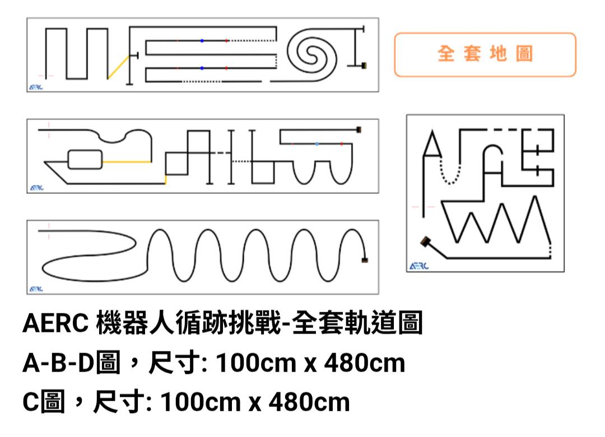

機器人校隊 第 1 堂 老師用
11/10（二）12:40–13:30，電腦教室二。自我介紹、分隊、整理收納。
今天只要三件事
- 每隊完成收納盒與清點表。
- 每個人說得出自己的角色。
- 每個人知道：我們要做一台會自己跑的車去比賽，實車和電腦模擬一起練。
時間不夠：收納與清點優先，影片縮短到 2 分鐘或留到下週。
流程（50 分鐘）
- 0–10 分：自我介紹（「我是＿＿，我喜歡＿＿，我想知道機器人＿＿」），分 2 隊、取隊名。
- 10–35 分：8 個分類格收納與清點，老師先示範一次。硬體工程師點數、記錄員填表、量測員檢查標籤、操控手蓋盒。
- 35–45 分：看影片 3–5 分鐘，講比賽。車子沿黑線自己走到終點，開始後不能碰車、不能改程式，路上有寶特瓶，每隊 1 人上場。
- 45–50 分：零件回格、蓋盒、清點表簽名交給老師。收尾提問：一台自己會動的車，一定需要哪三樣東西？（下週：主機、馬達、感測器）
今天的資源

上課前準備
- 分類收納盒 2 個、8 張分類標籤、筆、貼紙。
- 清點表 2 份（「應有數」先填好）。
- 角色卡 4 種：操控手、量測員、記錄員、硬體工程師。每隊 3 人，先由 1 人兼任，2–3 堂輪替。
- 投影與網路：先試開官網和影片（學校網路可能擋 YouTube）。
- SPIKE 模擬器先開好。
提醒
- 比賽日期還沒公告，只說「預計明年 4、5 月」。
- 不承諾名次或一定能參賽，不當眾提選拔成績，不提已取消的 TIRA。
- 零件數量對不上：先寫在清點表「備註」，下課後處理，不當場找。
- 學生搶角色：抽籤，說明 2–3 堂輪替，每個人都會輪到操控手。
made by 資訊老師黃博胤